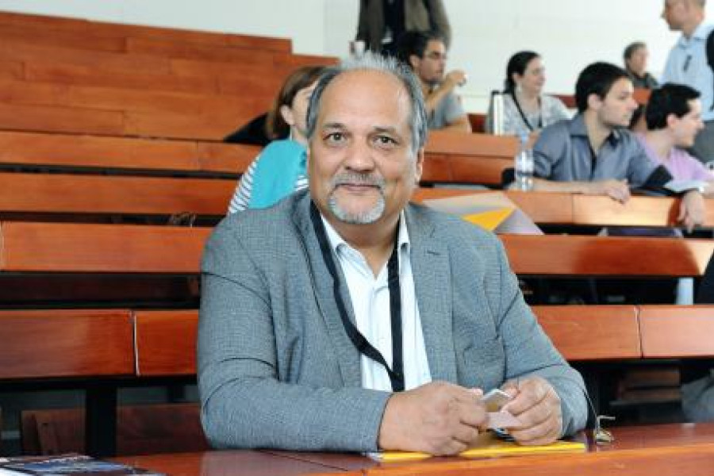

Vicente Espinoza
Asesor senior
Instituto de Ciencias Sociales (ICSO), Universidad Diego Portales
vicente.espinoza@usach.clDoctor en Sociología por la Universidad de Toronto, Canadá. Fue investigador principal del proyecto Fondecyt Regular N°1171426 «La estructura de la sociabilidad en Chile y sus consecuencias para nuestra convivencia» (2017–2022) y coinvestigador del Fondecyt Regular (2021–2024) «No, esos no se cuentan». Instituciones informales y cohesión social: legitimación, crítica y disputas en el orden normativo en el Chile actual.
Ha publicado cuatro libros y más de un centenar de artículos académicos en revistas nacionales e internacionales. Su investigación se centra en cohesión social, inequidad y capital social, así como en instituciones políticas informales y política subnacional.
Financiado y apoyado por